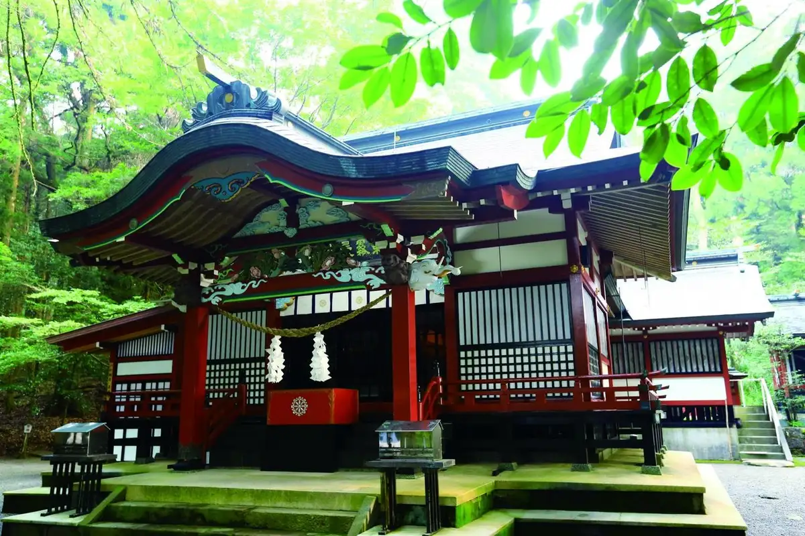
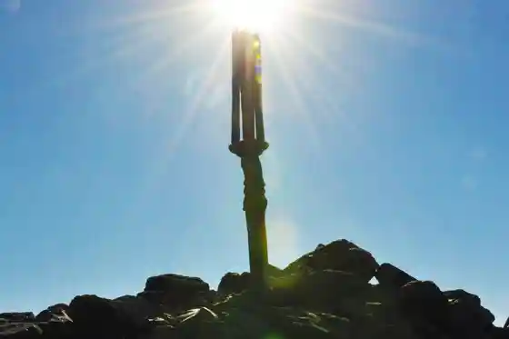
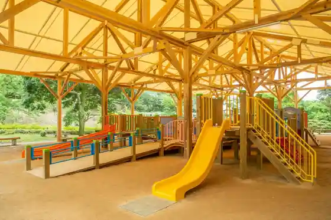
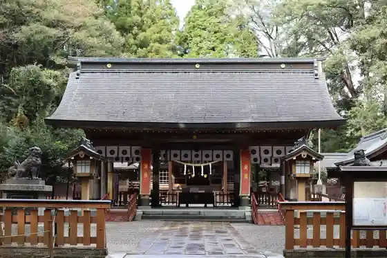

Japan / Miyazaki / Takaharu
Takaharu
Takaharu · Miyazaki
Takaharu
Highlighted on the Miyazaki map.

Sights
Takachiho Mine (Ten Sakahoko)
Takaharu, Miyazaki · 0984-42-4560 · Official / source link

Oji Hara Park
Takaharu, Miyazaki · 0984-42-3393 · Official / source link

Oike
Takaharu, Miyazaki · 0984-42-4560 · Official / source link
Kiri Shima Higashi Shrine
Takaharu, Miyazaki · 0984-42-3838 · Official / source link
Sanu Shrine
Takaharu, Miyazaki · 0984-42-1007 · Official / source link

Oku Kiri Shima Oike Kyanpu Village
Takaharu, Miyazaki · 0984-42-4038 · Official / source link
Takaharu Sogo Sports Park Sakka Plaza Tamokuteki Plaza
Takaharu, Miyazaki · 0984-42-1484 · Official / source link
Oku Kiri Shima Oji Hara Koen Campground
Takaharu, Miyazaki · 0984-42-3393 · Official / source link
Oike Baths Oto Campground
Takaharu, Miyazaki · 0984-42-4088 · Official / source link
Takaharu Gorufu Club
Takaharu, Miyazaki · 0984-42-0376 · Official / source link
Takaharu Tami Gym Bunkan
Takaharu, Miyazaki · 0984-42-2111 · Official / source link